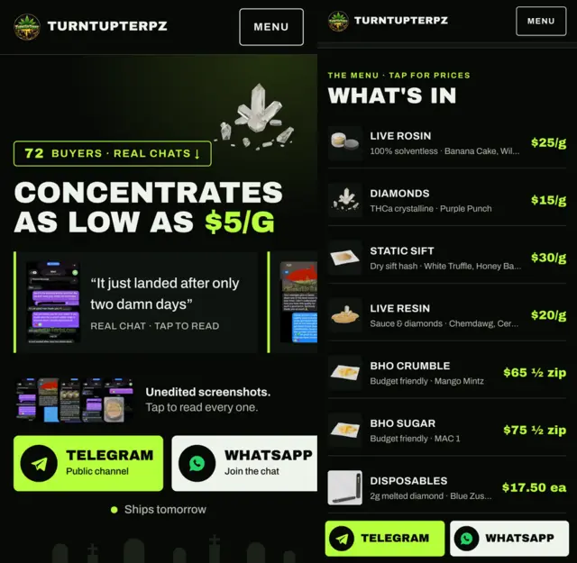
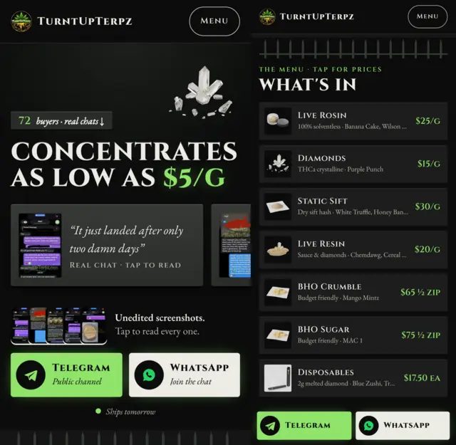
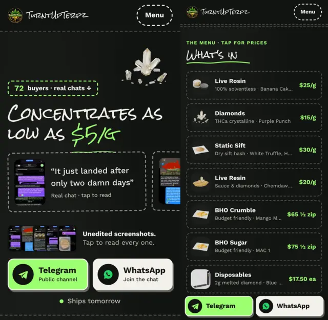
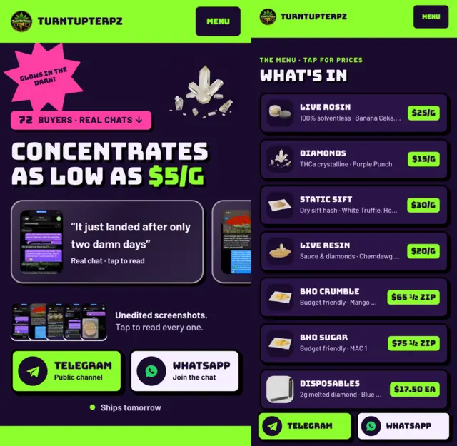
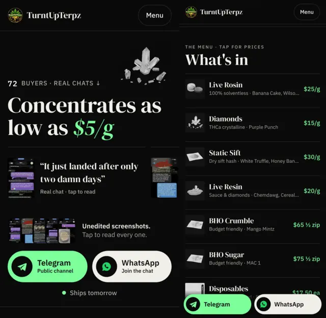

Glow Graveyard, five ways
Same approved ideas (proof first, "$5/g", Telegram + WhatsApp, scam section, menu, grouped vouches). New fonts, less "AI look", built for iPhone. Previews show iPhone SE (first screen) and iPhone 15 (menu).
Less "AI look"
- No emoji icons. Numbered steps instead
- No floating stickers or badge pills on every section
- Glow only where you tap (prices and buttons), not on everything
- Each draft has one real idea (clipboard, stone, chalk, toy packaging, editorial), not the same rounded cards repeated
- Each uses a different real type pairing
iPhone UX in all five
- Thumb-zone button bar: Telegram + WhatsApp slide up at the bottom once the main buttons scroll away, and hide when the page's own buttons are on screen
- First screen fits an iPhone SE: price headline, a real vouch and both buttons, without scrolling
- 44pt tap targets (Apple's minimum) on every link and button
- Room for the notch and home bar, section jumps that don't hide under the header, no fixed backgrounds (they stutter on iOS), and calmer motion when Reduce Motion is on
The drafts

A night watchman's clipboard: flat glow-green, a flashlight beam on the hero, a tombstone horizon, thin ruled lists instead of bubbly cards.
Open Glow 1 →
Engraved granite and wrought iron: carved capital letters, bevelled stone plaques for the vouches, an iron-fence divider above each section.
Open Glow 2 →
A graveyard drawn on a chalkboard: handwritten headings only, dashed chalk outlines, a hand-drawn underline under the price.
Open Glow 3 →
90s glow-in-the-dark toy packaging: purple card, flat neon green, hard shadows instead of blur, vouches in clear blister packs.
Open Glow 4 →
Quiet and editorial: near-black and white, hairline rules, big serif type, one green for prices and buttons only.
Open Glow 5 →Tested on iPhone SE (375×667) and iPhone 15 (393×852) screen sizes: everything fits, no sideways scrolling, no errors, every text passes WCAG contrast. All drafts · Original Glow Graveyard